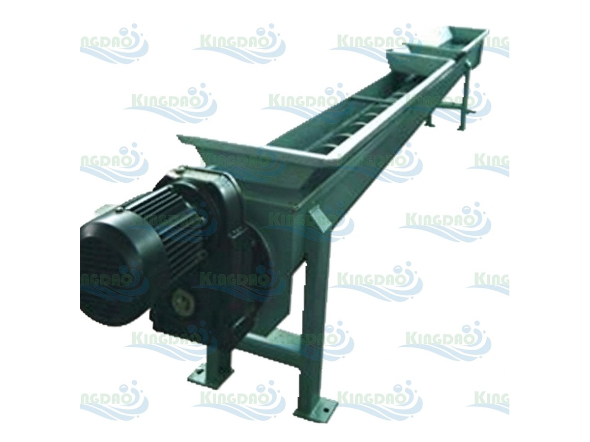
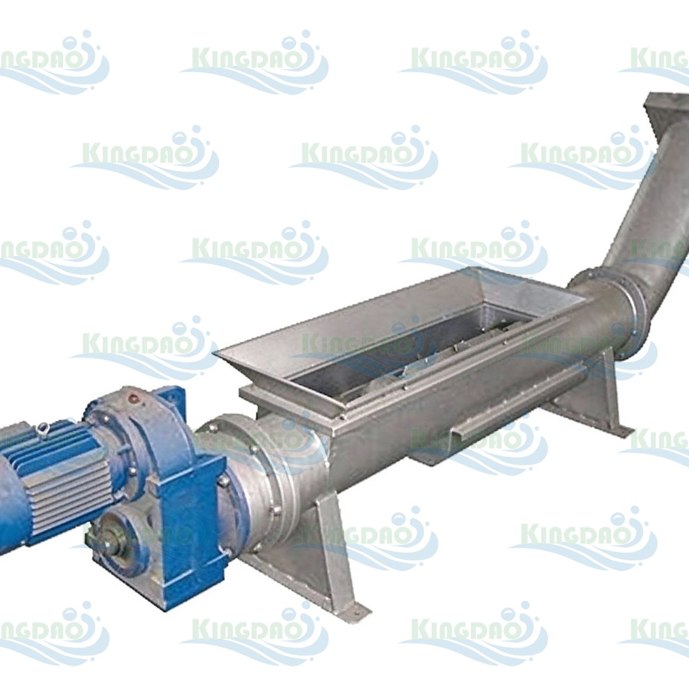
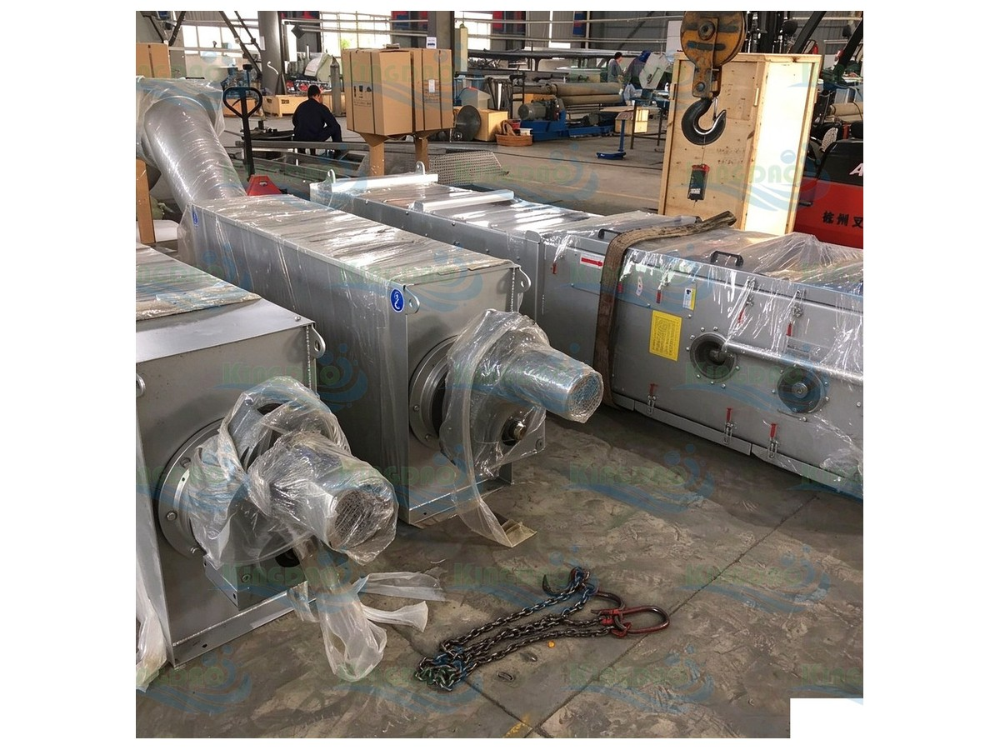
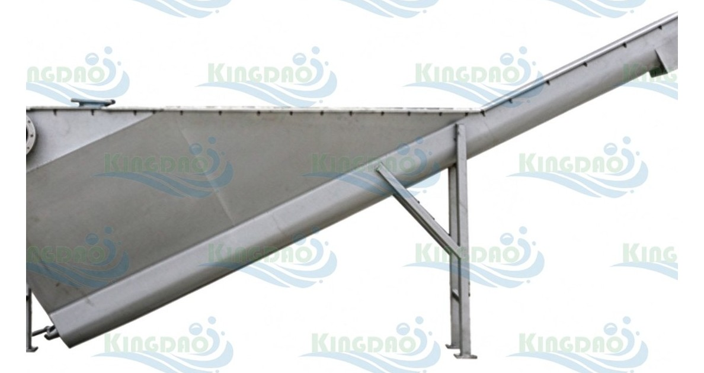

A screw screen combines three stages in one machine: the flow passes through a perforated screen basket, a screw conveys the retained material along the basket, and the last section dewaters and compacts it before discharge. What leaves the machine is a relatively dry plug of screenings, not a wet slurry.
That matters where screenings disposal is expensive or where a wet product would drip through the plant floor. It is the compact answer to fine screening in industrial plants and packaged pumping stations.
Whatever the screen catches has to leave the building as a manageable solid. The GP range covers the usual 1–4 m³/h of screenings; the shaftless conveyor moves it, the press takes the water back out of it.
| Model | Screw Ø mm | Screw speed | Capacity m³/h | Inlet dry solids | Outlet dry solids | Motor kW | L mm | B mm |
|---|---|---|---|---|---|---|---|---|
| GP-200 | 200 | 4–8 r/min | 1.0 | 85–95% | 40–45% | 1.1 | 1,500 | 260 |
| GP-300 | 300 | 4–8 r/min | 2.0 | 85–95% | 40–45% | 1.5 | 1,500 | 320 |
| GP-400 | 400 | 4–8 r/min | 4.0 | 85–95% | 40–45% | 3.0 | 1,800 | 420 |
Conveyor, press and grit separator — the same order as the GP table above.




Packaged pumping stations · industrial plants · retrofit installations
Flow, the medium, the installation and the discharge requirement — that is enough to select and quote.